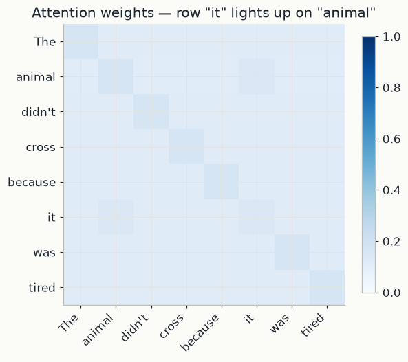
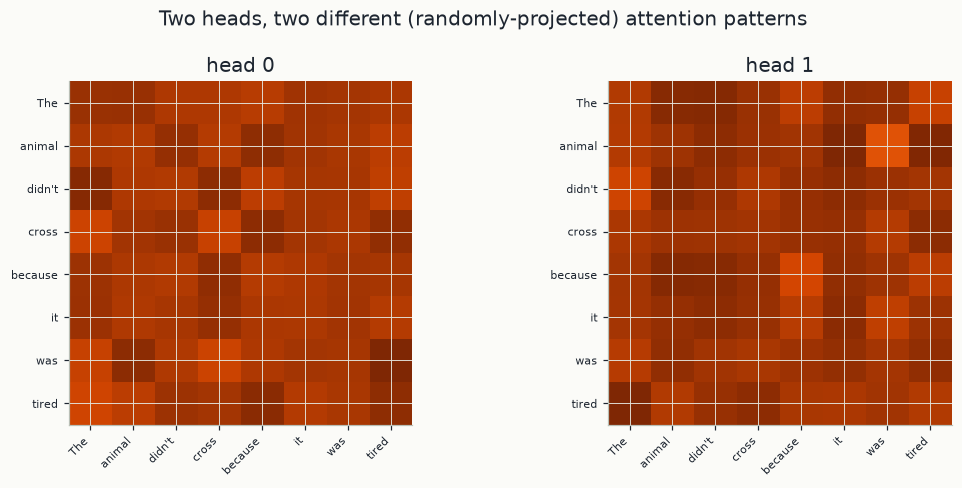
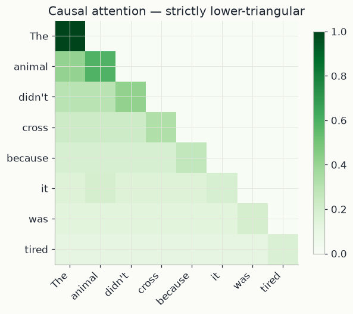

import numpy as np
import matplotlib.pyplot as plt
import mlutils
mlutils.set_style()
rng = np.random.default_rng(0)1. Tokens as vectors, and the idea of attention
A transformer reads a sentence as a list of tokens (words or pieces of words). Each token is represented by a vector of numbers, its embedding. The n token vectors of a sentence are stacked as the rows of a matrix
X \in \mathbb R^{n \times d_{\text{model}}},
where n is the number of tokens and d_{\text{model}} the length of each vector. Row i, written \mathbf x_i, stands for token i.
An embedding describes a word out of context. Meaning, however, depends on context: in "The animal didn't cross because it was tired", the vector for "it" should end up carrying information about "animal". Self-attention is the operation that does this. Every token looks at every token of the sentence (itself included), decides how relevant each one is, and replaces its own vector by a weighted average of what it found, the relevant tokens weighing most.
Think of a library. You arrive with a query (what you are looking for). Every book has a key (the label on its spine) and a value (its content). You compare your query with every key and read mostly the books whose keys match. Attention does the same, except that it reads every book a little, in proportion to how well it matches.
2. Scaled dot-product attention, step by step
Step 1: queries, keys, values. Each token plays three roles, obtained from its embedding by three learned matrices:
Q = X W_Q, \qquad K = X W_K, \qquad V = X W_V .
W_Q and W_K have shape d_{\text{model}} \times d_k and W_V has shape d_{\text{model}} \times d_v, so Q and K are n \times d_k and V is n \times d_v. Row i of Q, written \mathbf q_i, is what token i is looking for; row j of K, \mathbf k_j, is what token j can be found by; row j of V, \mathbf v_j, is what token j hands over once found.
Step 2: scores. The match between a query and a key is their dot product:
s_{ij} = \mathbf q_i \cdot \mathbf k_j = \sum_{m=1}^{d_k} q_{im}\, k_{jm}.
It is large and positive when the two vectors point the same way, zero when they are perpendicular, negative when they point in opposite directions. All n^2 scores form the matrix S = QK^\top (n \times n); row i holds how token i rates every token.
Step 3: scaling. Every score is divided by \sqrt{d_k}. The reason is statistical. Suppose the components q_m and k_m of a query and a key are independent random numbers with mean 0 and variance 1. Each product q_m k_m then has mean \mathbb E[q_m]\,\mathbb E[k_m] = 0, and variance
\mathrm{Var}(q_m k_m) = \mathbb E[q_m^2 k_m^2] - 0^2 = \mathbb E[q_m^2]\,\mathbb E[k_m^2] = 1 \cdot 1 = 1.
The dot product is a sum of d_k such independent terms, and variances of independent terms add:
\mathrm{Var}(\mathbf q \cdot \mathbf k) = \sum_{m=1}^{d_k} \mathrm{Var}(q_m k_m) = d_k .
So the typical size of a score (its standard deviation) grows like \sqrt{d_k}: with d_k = 64, scores of \pm 8 are routine. Dividing by \sqrt{d_k} brings the variance back to d_k / d_k = 1, whatever the dimension. Step 4 shows why large scores would hurt.
Step 4: softmax. Write u_{ij} = s_{ij}/\sqrt{d_k} for the scaled scores. Each row is turned into weights by the softmax:
a_{ij} = \frac{e^{u_{ij}}}{\sum_{l=1}^{n} e^{u_{il}}}.
Its properties can be read off the formula:
- every a_{ij} is positive, since an exponential is positive;
- each row sums to 1, since the denominator is the sum of the numerators; row i is a probability distribution over the tokens that token i attends to;
- a higher score always gets a higher weight;
- adding the same constant c to a whole row changes nothing, since e^{c} multiplies numerator and denominator alike (the code subtracts the row maximum before exponentiating, which avoids overflow);
- it is sensitive to spread: scores (0, 1) give weights (0.27, 0.73), scores (0, 8) give (0.0003, 0.9997).
The last point is the one the scaling addresses. The derivative of the softmax is \partial a_{ij}/\partial u_{il} = a_{ij}(\delta_{jl} - a_{il}), with \delta_{jl} = 1 if j = l and 0 otherwise. When one weight is near 1 and the others near 0, every such product is near 0, and gradient-based learning stalls.
Step 5: weighted average of values. The output for token i is
\mathbf o_i = \sum_{j=1}^{n} a_{ij}\, \mathbf v_j .
The weights are positive and sum to 1, so \mathbf o_i is an average of the value vectors, pulled toward the tokens that token i found most relevant.
All together. Steps 2 to 5, for all tokens at once, are one line of matrix algebra:
\mathrm{Attention}(Q, K, V) = \mathrm{softmax}\!\left(\frac{QK^\top}{\sqrt{d_k}}\right) V ,
with the softmax applied to each row. The softmax produces the weight matrix A (n \times n, entries a_{ij}), and multiplying by V gives one output row per token (n \times d_v).
3. A worked example by hand
Three tokens with 2-D embeddings. As in the code's first example, the embeddings are used directly as queries, keys and values (Q = K = V = X, so d_k = 2):
X = \begin{pmatrix} 1 & 0 \\ 0 & 1 \\ 1 & 1 \end{pmatrix}, \qquad \mathbf x_1 = (1, 0),\quad \mathbf x_2 = (0, 1),\quad \mathbf x_3 = (1, 1).
Scores. S = QK^\top = XX^\top. For instance s_{13} = \mathbf x_1 \cdot \mathbf x_3 = 1 \cdot 1 + 0 \cdot 1 = 1 and s_{33} = 1 + 1 = 2. Then divide by \sqrt 2 \approx 1.414:
S = \begin{pmatrix} 1 & 0 & 1 \\ 0 & 1 & 1 \\ 1 & 1 & 2 \end{pmatrix}, \qquad \frac{S}{\sqrt 2} \approx \begin{pmatrix} 0.707 & 0 & 0.707 \\ 0 & 0.707 & 0.707 \\ 0.707 & 0.707 & 1.414 \end{pmatrix}.
Softmax, row by row, using e^{0} = 1, e^{0.707} \approx 2.028 and e^{1.414} \approx 4.113:
| query | exponentials | row sum | weights a_{i1},\ a_{i2},\ a_{i3} |
|---|---|---|---|
| token 1 | 2.028, 1, 2.028 | 5.056 | 0.401, 0.198, 0.401 |
| token 2 | 1, 2.028, 2.028 | 5.056 | 0.198, 0.401, 0.401 |
| token 3 | 2.028, 2.028, 4.113 | 8.169 | 0.248, 0.248, 0.503 |
Each row sums to 1, up to rounding. Token 1 gives the least weight to token 2, whose vector is perpendicular to its own (score 0).
Outputs. \mathbf o_1 = 0.401\,(1, 0) + 0.198\,(0, 1) + 0.401\,(1, 1) = (0.802,\ 0.599). In the same way \mathbf o_2 = (0.599,\ 0.802) and \mathbf o_3 = (0.752,\ 0.752). Token 1 started as (1, 0) and now carries some of the second direction, borrowed from tokens 2 and 3: it has been mixed with its context.
With a causal mask (section 4), token 1 may only look at itself: weights (1, 0, 0), output (1, 0). Token 2 may look at tokens 1 and 2, with scaled scores 0 and 0.707: weights 1/3.028 \approx 0.330 and 2.028/3.028 \approx 0.670. Token 3 already sees everything before it, so its row is unchanged.
4. Multi-head attention, masks and word order
Multi-head attention. One weight matrix A expresses one notion of relevance, but language has several at once: which noun a pronoun refers to, which verb goes with which subject, which words are neighbours. Multi-head attention runs H attention computations, called heads, side by side. Head h has its own projections W_Q^{(h)}, W_K^{(h)}, W_V^{(h)}, each of shape d_{\text{model}} \times d_k with d_k = d_{\text{model}}/H:
\mathrm{head}_h = \mathrm{Attention}\big(XW_Q^{(h)},\ XW_K^{(h)},\ XW_V^{(h)}\big) \qquad (n \times d_k).
The H outputs are placed side by side into an n \times d_{\text{model}} matrix and mixed by one more learned matrix W_O (d_{\text{model}} \times d_{\text{model}}):
\mathrm{MultiHead}(X) = \big[\,\mathrm{head}_1,\ \dots,\ \mathrm{head}_H\,\big]\, W_O .
Splitting d_{\text{model}} among the heads keeps the cost close to that of one full-width head.
Causal mask. A model that generates text left to right predicts token i+1 from tokens 1 to i, so during training token i must not attend to any later token. Before the softmax, every scaled score with j > i is replaced by -\infty:
u_{ij} = \begin{cases} s_{ij}/\sqrt{d_k} & \text{if } j \le i, \\ -\infty & \text{if } j > i, \end{cases} \qquad \text{so} \qquad a_{ij} = 0 \ \text{ for } j > i,
because e^{-\infty} = 0. The remaining weights of each row still sum to 1, spread over the past and the present only, and A becomes lower-triangular.
Attention alone ignores word order. Without a mask, nothing in the formula of section 2 knows where a token sits. Reorder the rows of X with a permutation matrix P (a matrix that shuffles rows, with P^\top P = I). Then Q, K and V are reordered the same way, the scores become PSP^\top (rows and columns shuffled together), the row-wise softmax gives PAP^\top, and
\mathrm{Attention}(PX) = PAP^\top\, PV = PAV = P\,\mathrm{Attention}(X).
Reordering the input only reorders the output: attention is permutation equivariant. In "the dog bit the man" and "the man bit the dog", "dog" would get the same output vector. To make order visible, transformers add a positional encoding \mathbf p_i, a vector that depends only on the position i, to each embedding: \mathbf x_i \leftarrow \mathbf x_i + \mathbf p_i. The original transformer (Vaswani et al., 2017) uses sines and cosines of different frequencies, p_{i,2m} = \sin\big(i/10000^{2m/d_{\text{model}}}\big) and p_{i,2m+1} = \cos\big(i/10000^{2m/d_{\text{model}}}\big); many later models learn \mathbf p_i instead. The examples below need no positions, because the link between "it" and "animal" is written into the embeddings directly.
What the code does. Section 5 writes the formula of section 2 as scaled_dot_product_attention(Q, K, V, mask=None): scores is QK^\top/\sqrt{d_k}, masked entries become -np.inf, softmax normalises each row after subtracting its maximum, and the function returns weights @ V together with A (weights). Section 6 builds embeddings for an 8-token sentence and uses them as Q = K = V, like the hand example. Section 7 implements multi_head_attention with Wq, Wk, Wv, Wo (W_Q, W_K, W_V, W_O): each is one d_{\text{model}} \times d_{\text{model}} matrix whose columns are cut into n_heads blocks of d_k columns, which is the same as giving every head its own d_{\text{model}} \times d_k projection. Section 8 builds the causal mask with np.tril; True marks the allowed positions j \le i.
5. Scaled dot-product attention in code
The function below is the formula of section 2, \mathrm{softmax}(QK^\top/\sqrt{d_k})\,V, with the optional causal mask of section 4. It returns both the outputs and the weight matrix, so the attention pattern can be plotted.
def softmax(x, axis=-1):
x = x - x.max(axis=axis, keepdims=True) # subtract max for numerical stability
e = np.exp(x)
return e / e.sum(axis=axis, keepdims=True)
def scaled_dot_product_attention(Q, K, V, mask=None):
d_k = Q.shape[-1]
scores = Q @ K.swapaxes(-2, -1) / np.sqrt(d_k)
if mask is not None:
scores = np.where(mask, scores, -np.inf)
weights = softmax(scores, axis=-1)
return weights @ V, weights6. A worked example: resolving "it"
Take the classic ambiguous sentence "The animal didn't cross because it was tired". A reader instantly knows "it" means the animal, not the street or "because". To show attention doing the same thing, we hand-build embeddings where "it"'s embedding is partly built from "animal"'s (the token really does carry information pointing back to what it refers to) and use the raw embeddings directly as Q, K and V — no learned projection yet, so the attention pattern reflects nothing but embedding similarity.
tokens = ["The", "animal", "didn't", "cross", "because", "it", "was", "tired"]
n = len(tokens)
embeddings = np.eye(n) # one-hot base: every token starts fully distinct
it_idx, animal_idx = tokens.index("it"), tokens.index("animal")
embeddings[it_idx] = 0.4 * embeddings[it_idx] + 0.6 * embeddings[animal_idx] # "it" echoes "animal"
Q = K = V = embeddings
out, weights = scaled_dot_product_attention(Q, K, V)
fig, ax = plt.subplots(figsize=(6, 5.5))
im = ax.imshow(weights, cmap="Blues", vmin=0, vmax=1)
ax.set_xticks(range(n)); ax.set_xticklabels(tokens, rotation=45, ha="right")
ax.set_yticks(range(n)); ax.set_yticklabels(tokens)
ax.set_title('Attention weights — row "it" lights up on "animal"')
fig.colorbar(im, ax=ax, shrink=0.8)<matplotlib.colorbar.Colorbar at 0x26c411d5160>

it_weights = weights[it_idx]
for token, w in sorted(zip(tokens, it_weights), key=lambda p: -p[1])[:3]:
print(f"{token!r}: {w:.3f}")'animal': 0.147 'it': 0.142 'The': 0.119
The row for "it" puts most of its attention mass on "animal" (and on itself) — the same coreference a reader resolves instantly. Nothing here was trained: this is pure arithmetic once the embeddings encode the relationship, which is exactly the computation a trained transformer performs once its embeddings (learned from data) encode similar relationships.
7. Multi-head attention
Section 4 described multi-head attention: several attention computations in parallel, each in a smaller subspace of the embedding with its own projections, concatenated and mixed by W_O. The implementation below projects once with full d_{\text{model}} \times d_{\text{model}} matrices and then reshapes, so that each head works on its own block of d_k columns.
def multi_head_attention(X, n_heads, Wq, Wk, Wv, Wo):
seq_len, d_model = X.shape
d_k = d_model // n_heads
Q, K, V = X @ Wq, X @ Wk, X @ Wv # (seq_len, d_model) each
def split_heads(M):
return M.reshape(seq_len, n_heads, d_k).transpose(1, 0, 2) # (n_heads, seq_len, d_k)
Qh, Kh, Vh = split_heads(Q), split_heads(K), split_heads(V)
head_outputs, head_weights = [], []
for h in range(n_heads):
out_h, w_h = scaled_dot_product_attention(Qh[h], Kh[h], Vh[h])
head_outputs.append(out_h)
head_weights.append(w_h)
concat = np.concatenate(head_outputs, axis=-1) # back to (seq_len, d_model)
return concat @ Wo, np.stack(head_weights) # (n_heads, seq_len, seq_len)d_model, n_heads = 8, 2
Wq = rng.normal(size=(d_model, d_model)) * 0.3
Wk = rng.normal(size=(d_model, d_model)) * 0.3
Wv = rng.normal(size=(d_model, d_model)) * 0.3
Wo = rng.normal(size=(d_model, d_model)) * 0.3
mh_out, mh_weights = multi_head_attention(embeddings, n_heads, Wq, Wk, Wv, Wo)
print("multi-head output shape:", mh_out.shape, "(unchanged: seq_len x d_model)")
print("per-head attention weights shape:", mh_weights.shape, "(n_heads, seq_len, seq_len)")
fig, axes = plt.subplots(1, n_heads, figsize=(10, 4.5))
for h, ax in enumerate(axes):
ax.imshow(mh_weights[h], cmap="Oranges", vmin=0, vmax=mh_weights[h].max())
ax.set_xticks(range(n)); ax.set_xticklabels(tokens, rotation=45, ha="right", fontsize=7)
ax.set_yticks(range(n)); ax.set_yticklabels(tokens, fontsize=7)
ax.set_title(f"head {h}")
fig.suptitle("Two heads, two different (randomly-projected) attention patterns")
fig.tight_layout()multi-head output shape: (8, 8) (unchanged: seq_len x d_model) per-head attention weights shape: (2, 8, 8) (n_heads, seq_len, seq_len)

With random W_Q, W_K, W_V the two heads' patterns are just different linear views of the same embeddings — nothing meaningful yet, since nothing was trained. In a real transformer, gradient descent shapes these projection matrices so that different heads reliably specialise (one might track subject-verb agreement, another coreference like section 6's), purely by minimising a training loss end to end.
8. Causal masking, for generation
As explained in section 4, a model that generates text left to right must not "see the
future": token i may only attend to tokens 1, \dots, i. The mask below marks those
allowed positions with True; every other score becomes -\infty before the softmax.
causal_mask = np.tril(np.ones((n, n), dtype=bool)) # True = allowed to attend
_, causal_weights = scaled_dot_product_attention(Q, K, V, mask=causal_mask)
fig, ax = plt.subplots(figsize=(6, 5.5))
im = ax.imshow(causal_weights, cmap="Greens", vmin=0, vmax=1)
ax.set_xticks(range(n)); ax.set_xticklabels(tokens, rotation=45, ha="right")
ax.set_yticks(range(n)); ax.set_yticklabels(tokens)
ax.set_title("Causal attention — strictly lower-triangular")
fig.colorbar(im, ax=ax, shrink=0.8)
upper_triangle_zero = np.allclose(causal_weights[np.triu_indices(n, k=1)], 0)
print(f"weights above the diagonal are exactly zero: {upper_triangle_zero}")weights above the diagonal are exactly zero: True

Notice "it" (position 5) can no longer see "was" or "tired" (positions 6-7) — with the mask on, "it" would have to be resolved from context that comes before it, which is the real constraint an autoregressive model generating left to right has to work under.
Exercises
Exercise 1: Remove the coreference signal
Rebuild embeddings as a plain one-hot matrix (skip the "it echoes animal" blend) and
rerun section 6's heatmap. What does the attention pattern look like now, and why?
Solution
plain_embeddings = np.eye(n)
_, plain_weights = scaled_dot_product_attention(plain_embeddings, plain_embeddings, plain_embeddings)
With pure one-hot embeddings every token is equally (dis)similar to every other, so the softmax is close to uniform — attention has nothing informative to key on because the embeddings themselves carry no relationship. That's the real lesson: attention's patterns are only as meaningful as the embeddings (or learned projections) feeding it.
Exercise 2: More heads, smaller head dimension
Change n_heads to 4 (so each head only gets d_k = 2). Do the per-head patterns
look noisier? What's the trade-off multi-head attention is making between number of
heads and dimensionality per head?
Solution
More heads with the same total d_model means each head reasons in a lower-
dimensional subspace, which can make individual head patterns look more erratic —
the trade-off is between having more distinct relationships a model can represent
(more heads) versus more expressive power per relationship (bigger d_k per head).
Key takeaways
- Attention scores how well each query matches each key, turns the scores into weights with a softmax, and outputs a weighted blend of values — nothing more exotic than a differentiable, content-based lookup.
- Multi-head attention runs several smaller attention computations in parallel so different heads can specialise in different relationships; concatenating them restores the original dimensionality.
- A causal mask blocks attention to future positions, which is what makes autoregressive, left-to-right generation well-defined during training.